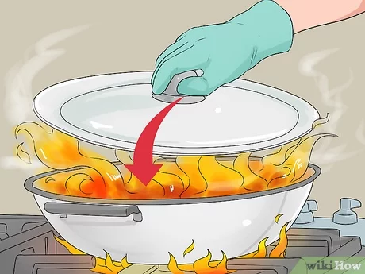
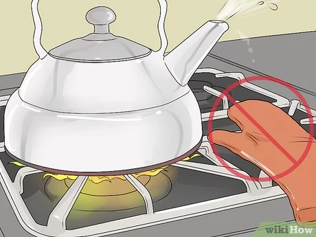
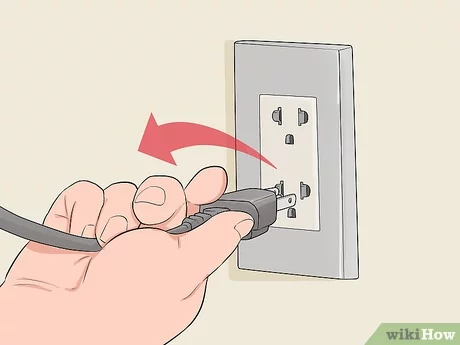

| 𝙲𝚘𝚘𝚔ing 𝚙𝚛𝚘𝚙𝚎𝚛𝚕𝚢 |
𝙵𝚒𝚛𝚎𝚜 𝚝𝚑𝚊𝚝 𝚘𝚌𝚌𝚞𝚛 𝚒𝚗 𝚑𝚘𝚖𝚎𝚜 𝚞𝚜𝚞𝚊𝚕𝚕𝚢 𝚜𝚝𝚊𝚛𝚝 𝚒𝚗 𝚝𝚑𝚎 𝚔𝚒𝚝𝚌𝚑𝚎𝚗, 𝚋𝚎𝚌𝚊𝚞𝚜𝚎 𝚝𝚑𝚊𝚝 𝚒𝚜 𝚠𝚑𝚎𝚛𝚎 𝚝𝚑𝚎 𝚌𝚘𝚘𝚔𝚒𝚗𝚐 𝚒𝚗 𝚠𝚑𝚒𝚌𝚑 𝚏𝚒𝚛𝚎 𝚒𝚜 𝚒𝚗𝚟𝚘𝚕𝚟𝚎𝚍. 𝚆𝚎 𝚖𝚞𝚜𝚝 𝚞𝚜𝚎 𝚝𝚑𝚎 𝚏𝚒𝚛𝚎 𝚙𝚛𝚘𝚙𝚎𝚛𝚕𝚢, 𝚊𝚗𝚍 𝚖𝚊𝚒𝚗𝚝𝚊𝚒𝚗 𝚝𝚑𝚎 𝚑𝚎𝚊𝚝 𝚝𝚘 𝚒𝚝𝚜 𝚊𝚟𝚎𝚛𝚊𝚐𝚎 𝚕𝚎𝚟𝚎𝚕 𝚏𝚛𝚘𝚖 𝚌𝚊𝚞𝚜𝚒𝚗𝚐 𝚏𝚒𝚛𝚎 𝚝𝚘 𝚜𝚙𝚛𝚎𝚊𝚍. 𝙸𝚗 𝚝𝚑𝚒𝚜 𝚠𝚊𝚢, 𝚠𝚎 𝚌𝚊𝚗 𝚖𝚊𝚗𝚊𝚐𝚎 𝚝𝚑𝚎 𝚌𝚑𝚊𝚗𝚌𝚎𝚜 𝚘𝚏 𝚊 𝚏𝚒𝚛𝚎 𝚑𝚊𝚙𝚙𝚎𝚗𝚒𝚗𝚐 𝚒𝚗 𝚝𝚑𝚎 𝚔𝚒𝚝𝚌𝚑𝚎𝚗. |
| 𝙺𝚎𝚎𝚙 𝚊𝚠𝚊𝚢 𝚏𝚕𝚊𝚖𝚖𝚊𝚋𝚕𝚎 𝚘𝚋𝚓𝚎𝚌𝚝𝚜 𝚏𝚛𝚘𝚖 𝚑𝚎𝚊𝚝 𝚜𝚘𝚞𝚛𝚌𝚎𝚜 |
𝙸𝚗 𝚝𝚑𝚎 𝚔𝚒𝚝𝚌𝚑𝚎𝚗 𝚘𝚛 𝚊𝚗𝚢 𝚙𝚊𝚛𝚝 𝚘𝚏 𝚢𝚘𝚞𝚛 𝚑𝚘𝚞𝚜𝚎, 𝚊𝚟𝚘𝚒𝚍 𝚙𝚕𝚊𝚌𝚒𝚗𝚐 𝚘𝚋𝚓𝚎𝚌𝚝𝚜 𝚋𝚎𝚜𝚒𝚍𝚎 𝚏𝚕𝚊𝚖𝚖𝚊𝚋𝚕𝚎 𝚘𝚋𝚓𝚎𝚌𝚝𝚜. 𝚂𝚞𝚌𝚑 𝚊𝚜 𝚊 𝚕𝚒𝚐𝚑𝚝𝚎𝚛 𝚗𝚎𝚊𝚛 𝚊 𝚌𝚞𝚛𝚝𝚊𝚒𝚗, 𝚐𝚕𝚘𝚟𝚎𝚜 𝚘𝚗 𝚊 𝚜𝚝𝚘𝚟𝚎, 𝚘𝚛 𝚊 𝚐𝚊𝚜 𝚝𝚊𝚗𝚔 𝚗𝚎𝚊𝚛 𝚊 𝚑𝚎𝚊𝚝 𝚜𝚘𝚞𝚛𝚌𝚎 𝚌𝚊𝚗 𝚋𝚎 𝚛𝚒𝚜𝚔𝚢 𝚒𝚗 𝚌𝚊𝚞𝚜𝚒𝚗𝚐 𝚊 𝚏𝚒𝚛𝚎. 𝚃𝚑𝚒𝚜 𝚒𝚜 𝚘𝚗𝚎 𝚘𝚏 𝚝𝚑𝚎 𝚌𝚘𝚖𝚖𝚘𝚗 𝚛𝚎𝚊𝚜𝚘𝚗𝚜 𝚠𝚑𝚢 𝚏𝚒𝚛𝚎𝚜 𝚜𝚝𝚊𝚛𝚝𝚎𝚍 𝚒𝚗 𝚑𝚘𝚖𝚎𝚜, 𝚊𝚗𝚍 𝚠𝚎 𝚖𝚞𝚜𝚝 𝚝𝚛𝚢 𝚝𝚘 𝚙𝚛𝚎𝚟𝚎𝚗𝚝 𝚒𝚝 𝚏𝚛𝚘𝚖 𝚑𝚊𝚙𝚙𝚎𝚗𝚒𝚗𝚐, 𝚒𝚝 𝚖𝚊𝚢 𝚕𝚎𝚊𝚍 𝚢𝚘𝚞 𝚝𝚘 𝚊 𝚍𝚒𝚏𝚏𝚒𝚌𝚞𝚕𝚝 𝚜𝚒𝚝𝚞𝚊𝚝𝚒𝚘𝚗. |
| 𝚄𝚗𝚙𝚕𝚞𝚐 𝚝𝚑𝚎 𝚘𝚋𝚓𝚎𝚌𝚝𝚜 𝚝𝚑𝚊𝚝 𝚊𝚛𝚎 𝚗𝚘𝚝 𝚞𝚜𝚎 |
𝚄𝚗𝚙𝚕𝚞𝚐 𝚊𝚙𝚙𝚕𝚒𝚊𝚗𝚌𝚎𝚜 𝚝𝚑𝚊𝚝 𝚊𝚛𝚎𝚗’𝚝 𝚒𝚗 𝚞𝚜𝚎. 𝚃𝚘𝚘 𝚖𝚞𝚌𝚑 𝚞𝚜𝚎 𝚘𝚏 𝚎𝚕𝚎𝚌𝚝𝚛𝚒𝚌𝚒𝚝𝚢 𝚌𝚊𝚗 𝚌𝚊𝚞𝚜𝚎 𝚝𝚑𝚎 𝚘𝚞𝚝𝚕𝚎𝚝 𝚝𝚘 𝚎𝚡𝚙𝚕𝚘𝚍𝚎 𝚊𝚗𝚍 𝚌𝚊𝚞𝚜𝚎 𝚊 𝚏𝚒𝚛𝚎. 𝙸𝚝 𝚒𝚜 𝚊𝚕𝚜𝚘 𝚗𝚘𝚝 𝚊𝚗 𝚘𝚛𝚍𝚒𝚗𝚊𝚛𝚢 𝚏𝚒𝚛𝚎, 𝚋𝚞𝚝 𝚊𝚗 𝚎𝚕𝚎𝚌𝚝𝚛𝚒𝚌𝚊𝚕 𝚏𝚒𝚛𝚎, 𝚊𝚗𝚍 𝚒𝚏 𝚢𝚘𝚞 𝚝𝚛𝚢 𝚝𝚘 𝚍𝚒𝚜𝚝𝚒𝚕𝚕 𝚒𝚝 𝚠𝚒𝚝𝚑 𝚠𝚊𝚝𝚎𝚛, 𝚒𝚝 𝚠𝚒𝚕𝚕 𝚐𝚎𝚝 𝚠𝚘𝚛𝚜𝚎. 𝚆𝚑𝚎𝚗 𝚝𝚑𝚎𝚜𝚎 𝚘𝚌𝚌𝚞𝚛, 𝚞𝚜𝚎 𝚊 𝚏𝚒𝚛𝚎 𝚎𝚡𝚝𝚒𝚗𝚐𝚞𝚒𝚜𝚑𝚎𝚛 𝚒𝚗𝚜𝚝𝚎𝚊𝚍, 𝚘𝚛 𝚒𝚏 𝚗𝚘𝚝, 𝚌𝚊𝚕𝚕 𝚏𝚘𝚛 𝚊𝚜𝚜𝚒𝚜𝚝𝚊𝚗𝚌𝚎 𝚊𝚜 𝚝𝚑𝚎𝚢 𝚠𝚒𝚕𝚕 𝚐𝚞𝚒𝚍𝚎 𝚢𝚘𝚞 𝚝𝚘 𝚢𝚘𝚞𝚛 𝚜𝚊𝚏𝚎𝚝𝚢. |